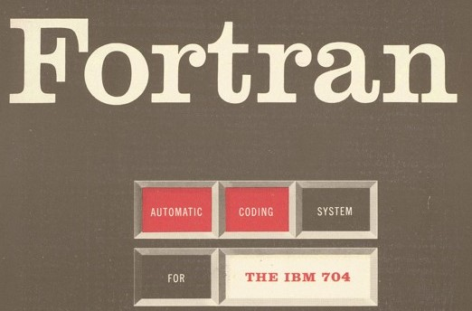

Fortran was een van de eerste wijd gebruikte programmeertalen.
De taal is ontwikkelde door een groep programmeurs van IBM onder leiding van John Backus.
De naam is een afkorting voor FORmula TRANslation, omdat het belangrijkste doel van de programmeertaal het omzetten van formules naar code was.
GeschiedenisJohn Backus en zijn team programmeurs begonnen hun werk aan Fortran in 1953. Het doel tijdens de ontwikkeling van Fortran was om een programmeertaal te maken die gemakkelijk te leren was, geschikt was voor meerdere doeleinden en dat complexe wiskundige vergelijkingen ingevoerd konden worden op een manier die op de algebraïsche notatie lijkt. Verder moest de taal bijna net zo efficiënt zijn als assembleertaal zodat programma's niet te traag werden. In 1957 werd de eerste versie van de Fortran compiler gepubliceerd. In die tijd waren nog veel programmeurs sceptisch of Fortran wel degelijk bijna net zo snel als assembleertaal zou zijn. |
 | ||
| De taal werd echter al gauw door heel veel programmeurs en wetenschappers gebruikt om intensieve wiskundige programma's te schrijven, omdat het zoveel makkelijker was om er programma's mee te schrijven.
Programmeurs konden tot wel 500% sneller programma's schrijven en Fortran was slechts 20% langzamer dan assembleertaal. Een aantal jaren nadat Fortran was gepubliceerd waren er veel verschillende dialecten in omloop, omdat programmeurs de taal hier en daar aanpaste zodat het beter met hun applicaties werkte. Hierdoor werd het erg moeilijk om programma's van de ene naar de andere computer over te dragen. De American Standards Association besloot daarom in 1966 om de eerste 'Standard for a Programming Language 1966' te publiceerde. Deze eerste standaard versie wordt tegenwoordig Fortran ‘66 of Fortran IV genoemd. Ondanks de publicatie van deze standaard versie ontstonden er toch weer dialecten en moest de American Standards Association opnieuw een vernieuwde standaard versie uitbrengen. Deze versie heette Fortran ‘77 en werd in 1978 gepubliceerd. Fortran ‘77 voegde een aantal nieuwe dingen aan de taal toe. De belangrijkste van deze toevoegingen waren een nieuwe manier om met foutmeldingen om te gaan en technieken voor de omgang met grootschalige projecten en programma's. De laatste bijwerking van Fortran, Fortran 2018, werd uitgebracht in 2018 . ApplicatiesFortran was een taal die voornamelijk voor wetenschappelijke doeleinden was bedoeld. Doordat de focus van Fortran vanaf het begin al op numerieke wiskunde lag is het erg goed in het manipuleren van rijen en vectoren en het rekenen met getallen. Vele decennia lang heeft het geholpen bij talloze projecten die veel wiskundig rekenwerk vereisten. Denk aan de aanleg van bruggen, het bouwen van vliegtuigen, automatisering van de industrie en de analyse van wetenschappelijke data. De software van de NASA satellieten Voyager 1 en Voyager 2 zijn geschreven in een vroege versie van Fortran en later is de software naar FORTRAN '77 geüpdatet. Ook nu is nog een groot deel van de code geschreven in FORTRAN, maar een deel ervan is overgezet naar de taal C. Op deze website is meer informatie over C te vinden.Waarvoor wordt Fortran tegewoordig nog gebruikt?Fortran is al een hele oude taal en tegenwoordig wordt het niet veel meer gebruikt. Je zult dan ool nog maar weinig nieuwe commerciële programma's vinden die geschreven zijn in Fortran. Fortran is echter nog wel een van de meest belangrijke talen voor het schrijven van intensieve programma's voor supercomputers. Deze programma's worden geschreven voor talloze projecten en wetenschappelijke gebieden. Bijvoorbeeld: astronomie, klimaat simulaties, scheiknde, economie, vloeistof simulaties, natuurkundige simulaties, data analyse, algebra en weer simulaties. Verder zijn veel van de benchmarks om de kracht van supercomputers en nieuwe processors te meten in Fortran geschreven. Hoewel zelfs in deze gebieden heeft Fortran felle concurrentie van nieuwere talen als C, C++, Python en Java. |
|||